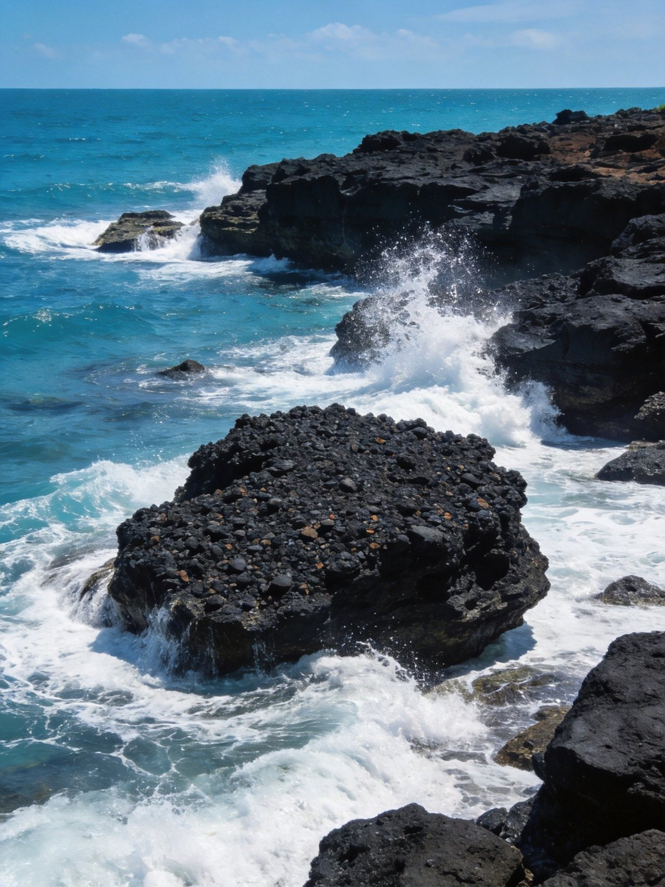
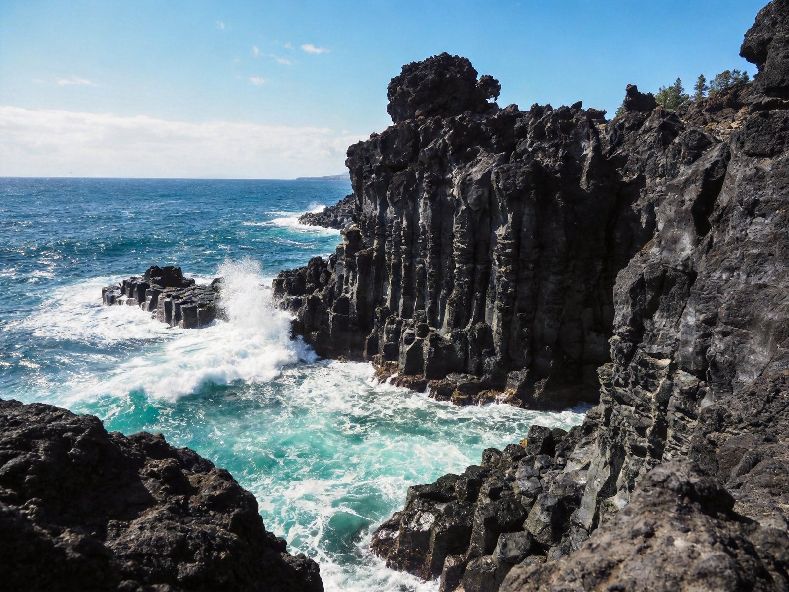
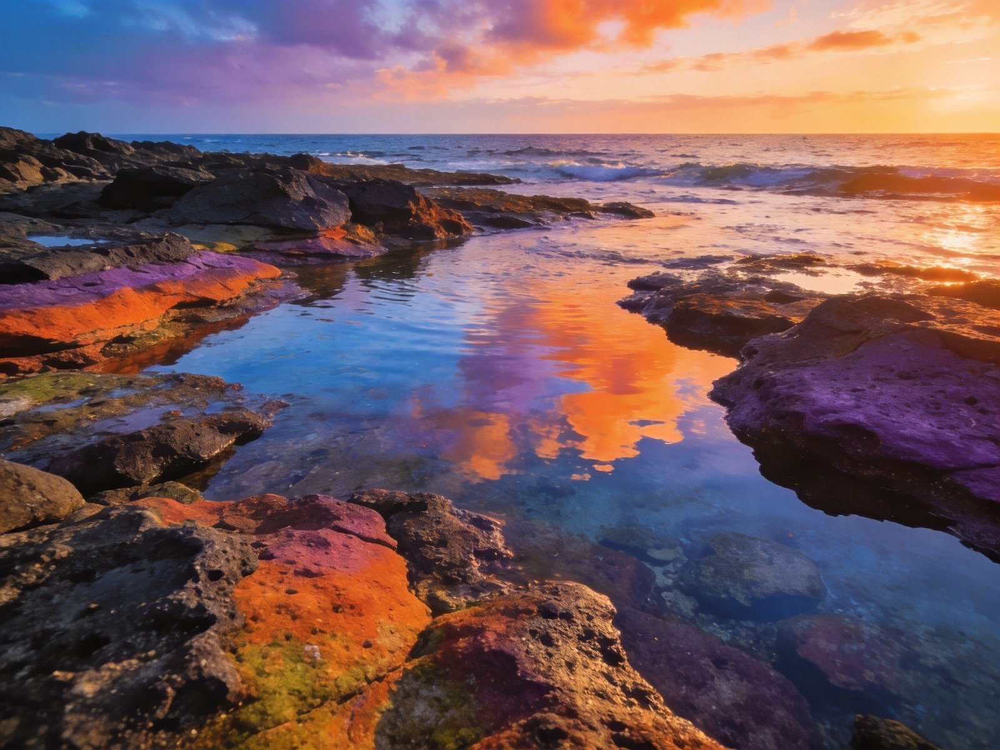
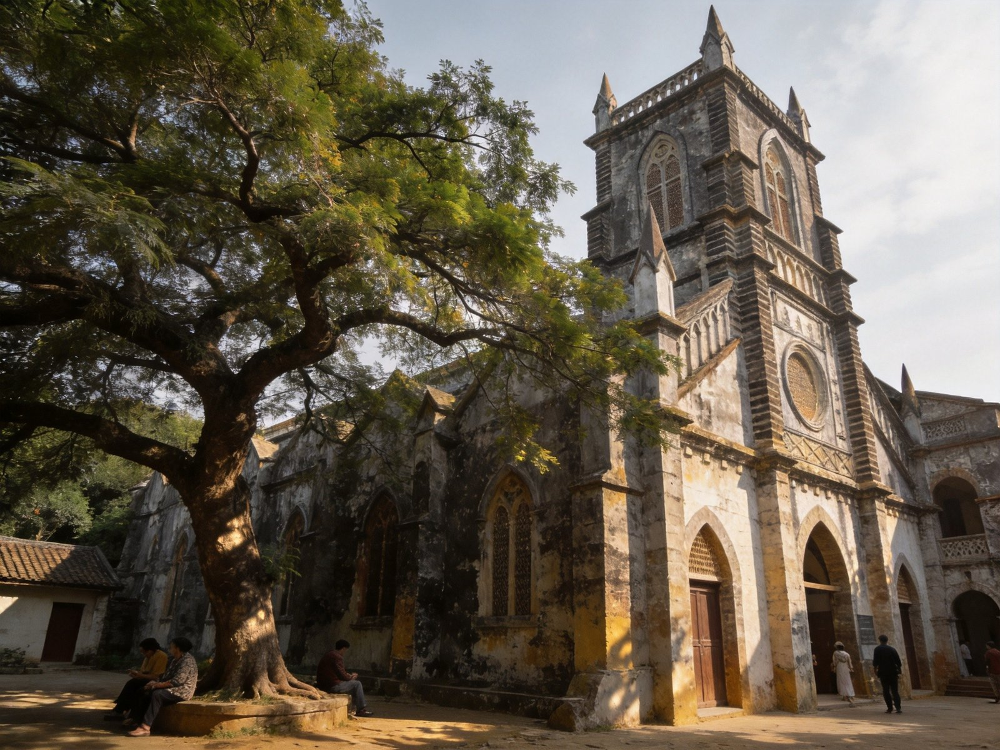
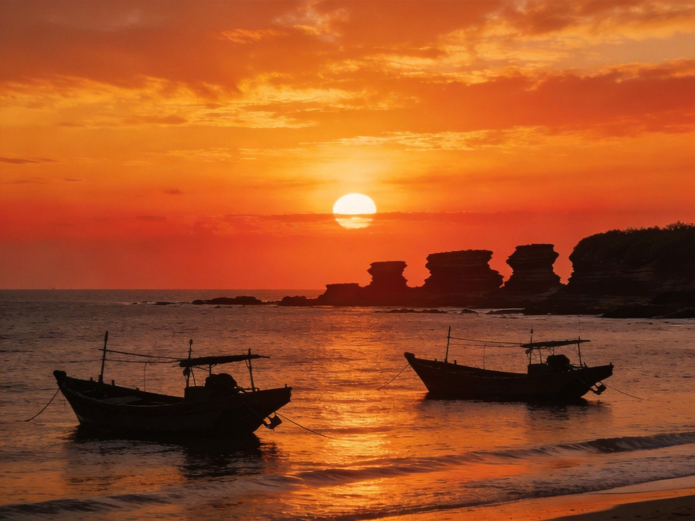

封面
总览
行前准备
Day1 火山
Day2 人文
Day3 慢游
美食清单
组合·贴士
安全提示

WEIZHOU ISLE · 涠洲岛
火山 · 海岛
涠洲岛 · 鳄鱼山 · 五彩滩
火山地质
海岛度假
天主教堂
五彩滩
骑行环岛
2–3 天 · A5 手册 · 海岛/摄影/慢游
1
/ 9
涠洲岛
动线总览
3 天怎么玩
Route Overview
Day 1
火山
鳄鱼山·五彩滩
鳄鱼山火山公园 → 五彩滩日落
Day 2
人文
天主教堂·环岛
天主教堂 → 环岛骑行 → 石螺口落日
Day 3
慢游
沙滩·返程
沙滩放空/浮潜 → 码头 → 返程
TIP
🎫 涠洲岛需从北海乘船抵达，船票+上岛门票需提前订。
TIP
🚲 岛上租电瓶车或小电驴环岛最自由，是主要交通方式。
2
/ 9
涠洲岛
行前准备
出发前，记住这 3 点
Before You Go
🏨 住哪最顺
涠洲岛南湾/石螺口民宿
：近海，看日落方便，
首推
天主教堂附近村落民宿安静有格调
旺季船票紧俏，住宿提前订
🚄 怎么走
乘船从
北海国际客运港
出发（约 1-1.5 小时航程）
上岛后租
电瓶车/小电驴
环岛最自由
岛内景点分散，骑车或包车最方便
🎒 必带
防晒、泳衣、驱蚊液、凉鞋、水
海岛紫外线强，防晒霜+帽子必备

鳄鱼山 · 火山海岸
3
/ 9
涠洲岛
Day 1 · 火山
Day 1 · 火山
鳄鱼山 · 五彩滩
鳄鱼山火山公园
→
火山熔岩海岸
→
五彩滩日落
🌋 鳄鱼山火山地质公园
中国最年轻的火山岛地质景观
黑色熔岩海岸、海蚀地貌，浪潮奔涌壮观
🪨 五彩滩
潮退后露出的五彩火山岩礁石滩
海水倒映霞光，色彩斑斓，是涠洲岛招牌
🌇 海岸落日
石螺口/沙滩看夕阳沉入海面
火山礁石剪影配晚霞，出片极美
TIP
五彩滩看日出最佳
；鳄鱼山靠海风大，注意防晒防风。

鳄鱼山 · 五彩滩
4
/ 9
涠洲岛
Day 2 · 人文
Day 2 · 人文
天主教堂 · 环岛
天主教堂
→
环岛骑行
→
石螺口落日
⛪ 天主教堂
哥特式老教堂，院落古树苍翠
静谧有氛围，是岛上最上镜的人文点
🚲 环岛骑行
沿海公路与村落交错
海风拂面，蓝天碧海，自在又惬意
🌅 石螺口日落
金夕把天空与海面染成橙红
渔船剪影、火山礁石，宁静美好
TIP
岛不大，
骑车环岛 2-3 小时足够
；教堂内勿喧哗，尊重宗教场所。

天主教堂 · 环岛
5
/ 9
涠洲岛
Day 3 · 慢游
Day 3 · 慢游
沙滩 · 返程
沙滩放空/浮潜
→
码头
→
返程
🏖 沙滩慢游
择一段人少沙滩躺平放空
听海风看海浪，节奏彻底慢下来
🤿 浮潜/海钓(可选)
水清处浮潜看珊瑚小鱼
或随船海钓，收获一份海味
🛥 返程
按时抵达码头乘船回北海
别错过船班
TIP
返程船班
固定且票紧
，务必提前确认并留足到码头时间。

石螺口 · 落日
火山 · 熔岩
6
/ 9
涠洲岛
美食清单
海岛鲜甜的味道
Eats
🦐
海鲜大餐
岛上现捞海产，椒盐皮皮虾、蒜蓉扇贝
🍚
海鲜粥/海鲜粉
粥底鲜甜，汤粉暖胃
🥥
椰子/椰冻
海岛标配，清甜解渴
🍌
香蕉/火龙果
岛上现摘热带水果
🐟
海钓渔获加工
灯塔/渔家餐厅可加工
TIP
去
南湾海鲜市场
现买现加工最划算，别在景区无明码标价处点。
7
/ 9
涠洲岛
组合 · 贴士
怎么串着玩
Combine & Tips
🌋
火山+海岛
火山地质+海岛度假，一张船票双重体验
📷
摄影
五彩滩霞光、傍晚日落，海岛大片不断
👨👩👧
亲子
海滩玩沙+浮潜看鱼，孩子最爱
🚲
骑行
环岛骑行自由自在，处处皆景
🔗
连玩
从
北海
出发，可与北海银滩、老街串联
TIP
涠洲岛“一岛一火山”，
地质奇观+海岛慢生活
兼得，适合放空.过夜必看日落。
8
/ 9
涠洲岛
安全提示
看清这些，玩得更安心
Stay Safe
🌊
海域安全
勿在禁止游泳区下水，带小孩岸上玩沙
☀️
防晒
海岛紫外线性极强，防晒霜+帽子必备
🦟
防蚊
傍晚蚊虫多，涂驱蚊液
🚲
骑行安全
环岛戴头盔、靠右行，山路注意
📞
紧急
遇险拨 110/120；联系码头与民宿求助
碧海火山「WorldStip」祝你玩得尽兴 🌊
9
/ 9
涠洲岛 · 火山海岛 2-3 日手册 · 由 WorldStip 定制
Insta360
记录美好
记录美好生活
相机指南 · CAMERA GUIDE